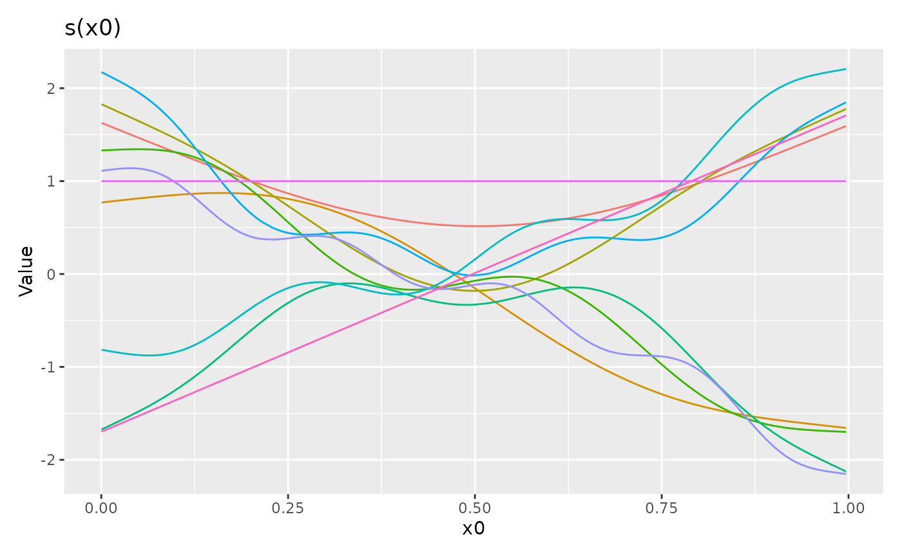

Plots basis functions using ggplot2
# S3 method for mgcv_smooth draw( object, legend = FALSE, use_facets = TRUE, labeller = NULL, xlab, ylab, title = NULL, subtitle = NULL, caption = NULL, ... )
| object | an object, the result of a call to |
|---|---|
| legend | logical; should a legend by drawn to indicate basis functions? |
| use_facets | logical; for factor by smooths, use facets to show the
basis functions for each level of the factor? If |
| labeller | a labeller function with which to label facets. The default
is to use |
| xlab | character or expression; the label for the x axis. If not
supplied, a suitable label will be generated from |
| ylab | character or expression; the label for the y axis. If not
supplied, a suitable label will be generated from |
| title | character or expression; the title for the plot. See
|
| subtitle | character or expression; the subtitle for the plot. See
|
| caption | character or expression; the plot caption. See
|
| ... | arguments passed to other methods. Not used by this method. |
A ggplot2::ggplot() object.
Gavin L. Simpson
load_mgcv() set.seed(42) df <- gamSim(4, n = 400, verbose = FALSE) bf <- basis(s(x0), data = df) draw(bf)